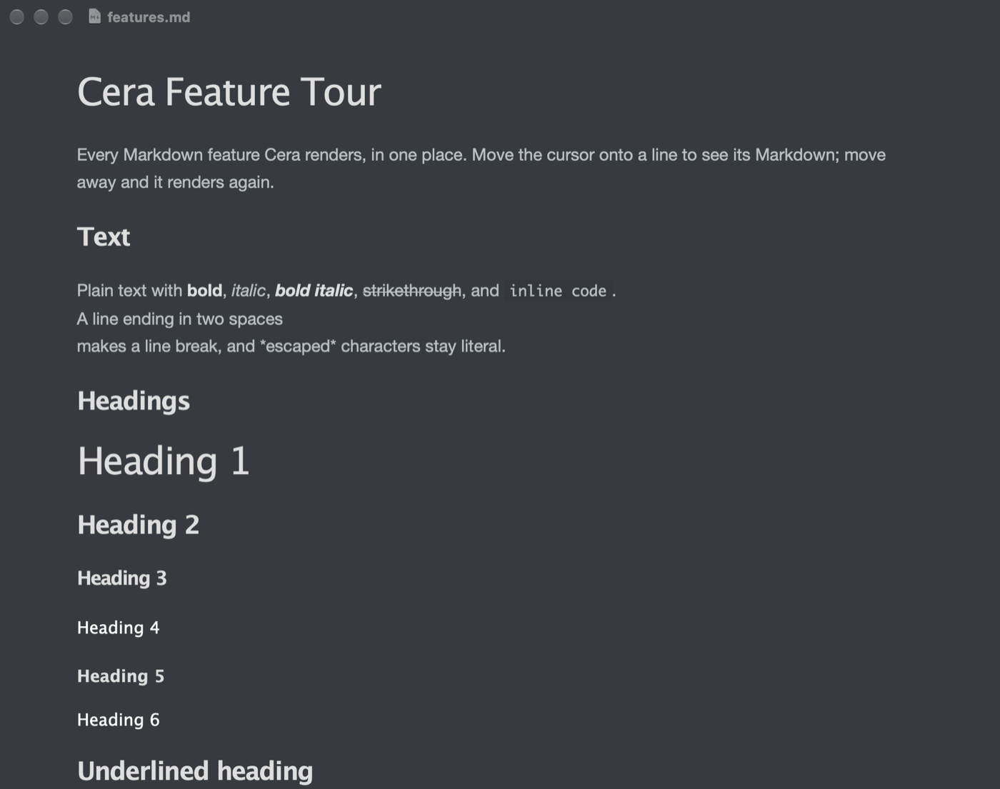

Open a .md file and it reads like a finished document. Click any line to edit its Markdown; move away and it renders again. Your file stays plain text.
Ship the beta on Friday, then tell the team.Ship the **beta** on *Friday*, then tell the team.
Fix the --zip flag- [x] Fix the `--zip` flag
Write the release notes- [ ] Write the [release notes](notes/release.md)
Keep it simple. One file, one window.> Keep it simple. One file, one window.
Point at a line, or tab to it, to see the Markdown underneath.
One file at a time
Cera is for the README in a repository, the notes someone sent you, a quick draft, a one-off document. Double-click it, read it, fix a line, save, close.
It isn't a second brain, and it doesn't try to replace Obsidian, Bear, or Logseq. There are no vaults and no folder sidebar, on purpose. Like Notepad, it opens a file, and that's the whole idea.
To be upfront: Cera is mostly vibe coded, built quickly with an AI coding assistant because I wanted something quick and dirty. Expect rough edges.
Opens any .md file from Finder, Open Recent, or the command line.
Renders as you type: headings, lists, task lists, quotes, tables, images, and highlighted code.
Edits in place: the line you're on shows its Markdown, the rest stays rendered.
Formats without memorizing syntax: select text and a format bar appears.
Shows images in place: drag or paste them in, size one with  or a right-click, and view any picture with cera photo.png.
Handles code like an editor: real tree-sitter highlighting for 21 languages, from Swift and Python to SQL, C#, and YAML. Pick the language from a list after ```, copy any block with one click, and Return and Tab keep your indentation.
Draws Mermaid diagrams natively: a ```mermaid block becomes the diagram, in your theme's colors. No web view, no JavaScript.
Scrolls wide tables sideways: a table too wide for the page gets its own scroll bar, so every column can be read.
Shows the source when you want it: ⌘/ switches the whole file to plain Markdown, and back.
Outlines long documents: a sidebar of headings (⌃⌘S) jumps to any section and highlights the one you're reading.
Handles big files: a 10 MB document opens in about a second and types without lag.
Six themes

Midnight: dark slate, Lucida Grande headings.
What's new in 0.6.6
Paste a URL over selected text to make a link. Select some text, paste a link, and it becomes [text](url), as in Obsidian. ⇧⌘V pastes the link as it is.
Front matter (0.6.5). YAML or TOML metadata at the top of a file shows as muted source instead of a rule and a huge heading.
Click a checkbox to tick it (0.6.3). Click a task's box to check or uncheck it, and ⌘L toggles the lines you're on.